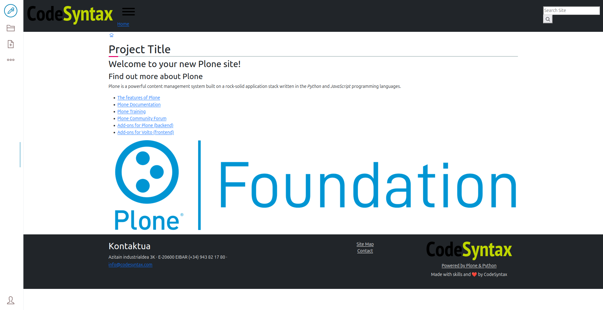

How to create a new project with volto-bootstrap-theme#
First run the next command to create a new volto project.
pipx run cookieplone project
After that, install the backend and frontend.
cd backend
make install
make start
cd frontend
make install
make start
now we have a new project with volto that is empty. Lets we add a new custom theme.
first add the necessary addons and dependencies
in your proyect packages/volto-project-name/package.json.
Add the next addons
"addons": [
"@eeacms/volto-accordion-block",
"@kitconcept/volto-slider-block",
"@kitconcept/volto-button-block",
"@eeacms/volto-columns-block",
"@eeacms/volto-block-style",
"@eeacms/volto-tabs-block",
"@codesyntax/volto-bootstrap-theme"
],
Also the dependencies.
"dependencies": {
"@eeacms/volto-accordion-block": "^10.4.6",
"bootstrap": "^5.3.3",
"sass": "^1.85.0",
"@kitconcept/volto-slider-block": "^6.3.1",
"embla-carousel-autoplay": "^8.0.0",
"embla-carousel-react": "^8.0.0",
"@kitconcept/volto-button-block": "*",
"@eeacms/volto-columns-block": "^8.0.1",
"@eeacms/volto-tabs-block": "*",
"@eeacms/volto-block-style": "*",
"@codesyntax/volto-bootstrap-theme": "*"
},
Finally in your generall frontend folder, in the volto.config.js file add the theme.
const addons = ['volto-project-name'];
const theme = '@codesyntax/volto-bootstrap-theme';
module.exports = {
addons,
theme,
};
Now we have to install again the frontend to see the changes.
cd frontend
make install
make start
The project will see something like this 
Once we have installed the bootstrap theme, we can customize. To customize the theme create the _main.scss and _variables.scss files inside your add-on’s theme folder. These files provide easy customization of the theme’s styles.
example for _variables.scss file:
_variables.scss: This file allows users to override SCSS variables from the base theme, such as colors, typography, and spacing. Example::
$primary: rgb(157, 183, 255);
$secondary: rgb(248, 131, 248);
$success: rgb(106, 44, 252);
$warning: red;
$font-size: 18px;
$line-height: 24px;
In the _main.scss file, you can add custom styles or include additional SCSS/CSS files. This file helps define additional styles that will be applied on top of the base theme’s default styles.
Files Structure:
src/
├── components
├── index.js
└── theme
├── _main.scss
└── _variables.scss
If we add some buttons we can see the result:
Default |
Edited |
|---|---|